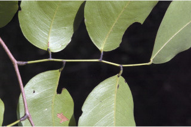
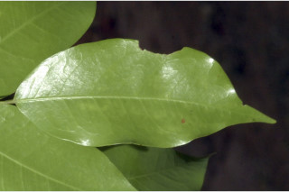
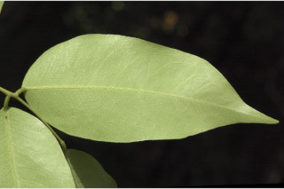
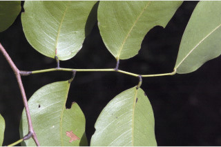
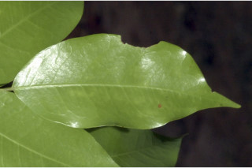
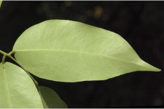

Trees up to 35 m tall.
35 ಮೀ. ಎತ್ತರದವರೆಗೆ ಬೆಳೆಯುವ ಮರಗಳು.
35 മീറ്റര് വരെ ഉയരത്തില് വളരുന്ന മരങ്ങള്.
மரம் 35 மீ. உயரம் வரை வளரக்கூடியது
Bark grey and flaky; blaze pink.
ತೊಗಟೆ ಬೂದು ಬಣ್ಣ ಹೊಂದಿದ್ದು ಚಕ್ಕೆರೂಪದಲ್ಲಿರುತ್ತವೆ ಮತ್ತು ಕಚ್ಚು ಮಾಡಿದ ಭಾಗ ನಸುಗೆಂಪು ಬಣ್ಣ ಹೊಂದಿರುತ್ತದೆ.
ഇളകിപ്പോകുന്ന ചാര കലര്ന്ന വെളുപ്പ് നിറത്തിലുള്ള പുറംതൊലി; വെട്ടുപാടിന് പിങ്ക് നിറം.
மரத்தின் பட்டை சாம்பல் நிறம் மற்றும் வெடிப்புகளுடையது, பட்டையின் உட்புறம் பளபளப்பான பிங்க் நிறம்.
Branchlets slender, terete, glabrous.
ಕಿರುಕೊಂಬೆಗಳು ತೆಳು ಹಾಗೂ ದುಂಡಾಗಿದ್ದು ರೋಮರಹಿತವಾಗಿರುತ್ತದೆ.
ഉപശാഖകള് നേര്ത്തതും, ഉരുതും, അരോമിലവുമാണ്.
சிறிய நுனிக்கிளைகள் மெலிதானது, குறுக்குவெட்டுத் தோற்றத்தில் வளையமானது, உரோமங்களற்றது.
Oily resin from cut wood.
ಮರವನ್ನು ಕಡಿದಾಗ ತೈಲರೂಪದ ಅಂಟು ದ್ರವಿಸುತ್ತದೆ.
തടിയിലെ മുറിവില് നിന്നും എണ്ണമയമായ റെസിന് സ്രവിക്കുന്നു.
வெட்டிய மரத்திலிருந்து எண்ணெய் போன்ற பிசின் சுரக்கும்.
Leaves compound, imparipinnate, alternate, distichous; stipules caducous; rachis pulvinate, terete, 6-10 cm long; petiolule 0.3-0.7 cm long, with short, subulate gland like structure at the base of terminal leaflet; leaflets 4-7, alternate, lamina 4.5-9 x 1.7-4.5 cm, asymmetric-falcate or narrow ovate-elliptic to narrow oblong, apex caudate - acuminate, base rounded or acute, margin entire, chartaceous, obscurely pellucid punctate; midrib slightly raised; secondary_nerves ca. 10 pairs; tertiary_nerves reticulate.
ಎಲೆಗಳು ಅಸಮ ಸಂಖ್ಯಾ ಗರಿರೂಪಿ ಸಂಯುಕ್ತ ಮಾದರಿಯಲ್ಲಿದ್ದು ಪರ್ಯಾಯ ಜೋಡನಾ ವ್ಯವಸ್ಥೆ ಹೊಂದಿದ್ದು ಕಾಂಡದ ಎರಡೂ ಕಡೆ ಎದುರು ಬದರಿನ ಲಂಬ ಸಾಲಿನಲ್ಲಿರುತ್ತವೆ; ಕಾವಿನೆಲೆಗಳು ಉದುರುವಂತಹವು; ಅಕ್ಷದಿಂಡು ಉಬ್ಬಿದ ಬುಡಸಮೇತವಿದ್ದು, ದುಂಡಾಕಾರವಾಗಿದ್ದು 6 ರಿಂದ 10 ಸೆ.ಮೀ. ಉದ್ದವಾಗಿರುತ್ತದೆ; ಕಿರು ಎಲೆ ತೊಟ್ಟುಗಳು 0.3 ರಿಂದ 0.7 ಸೆ.ಮೀ. ಉದ್ದ ಹೊಂದಿರುತ್ತವೆ. ಅಗ್ರದಲ್ಲಿರುವ ಕಿರು ಎಲೆಯ ಬುಡದಲ್ಲಿ ದಬ್ಬಳದಾಕಾರದಲ್ಲಿರುವ ರಸಗ್ರಂಥಿಯನ್ನೋಲುವ ರಚನೆಯನ್ನು ಕಿರು ಎಲೆ ತೊಟ್ಟು ಹೊಂದಿರುತ್ತದೆ; ಕಿರುಎಲೆಗಳು 4 ರಿಂದ 7, ಪರ್ಯಾಯವಾಗಿ ಜೋಡಿಸಿರುತ್ತವೆ, ಕಿರುಎಲೆಗಳ ಪತ್ರಗಳು 4.5 – 9 x 1.7 – 4.5 ಸೆಂ.ಮೀ. ಗಾತ್ರ ಹೊಂದಿದ್ದು, ಅಸಮ್ಮಿತಿ – ಕುಡುಗೋಲಿನಾಕಾರ ಅಥವಾ ಇಕ್ಕಟ್ಟಾದ ಚತುರಸ್ರಾಕಾರದವರೆಗಿನ ಆಕಾರ ಹೊಂದಿದ್ದು, ಬಾಲರೂಪಿ ಕ್ರಮೇಣ ಚೂಪಾಗುವ ತುದಿ, ದುಂಡಾದ ಅಥವಾ ಚೂಪಾದ ಬುಡಭಾಗ ಹೊಂದಿರುತ್ತವೆ, ಅಂಚುಗಳು ನಯವಾಗಿರುತ್ತವೆ, ಕಿರುಪತ್ರ ಕಾಗದವನ್ನೋಲುವಂತಿದ್ದು ಅಸ್ಪಷ್ಟವಾದ ಪ್ರಕಾಶಭೇಧ್ಯ ಮಚ್ಚೆಗಳನ್ನೊಳಗೊಂಡಿರುತ್ತದೆ; ಮಧ್ಯನಾಳ ಕೊಂಚ ಉಬ್ಬಿರುತ್ತದೆ; ಎರಡನೇ ದರ್ಜೆಯ ನಾಳಗಳು ಅಂದಾಜು 10 ಜೋಡಿಗಳಿದ್ದು ಮೂರನೇ ದರ್ಜೆಯ ನಾಳಗಳು ಜಾಲಯಂಧ ನಾಳ ವಿನ್ಯಾಸದವು.
തിന്റെ രുഭാഗത്തു മാത്രമായടുക്കിയ വിധത്തില്, ഏകാന്തരക്രമത്തിലുള്ള, അസമപിച്ഛക ബഹുപത്രങ്ങള്; വേഗം കൊഴിഞഅഞുപോകുന്ന അനുപര്ണ്ണങ്ങള് സെ.മി മുതല് 10 സെ.മി വരെ നീളമുള്ളതും, ഉരുതും, പര്വ്വഗ്രന്ഥിയോടുകൂടിയതും ആയ ബഹുപത്രാക്ഷം; പത്രാകാക്ഷത്തിന് 0.3 സെ. മി മുതല് 0.7 സെ.മി വരെ നീളവും, അറ്റത്തുള്ള പത്രകാധാരത്തിനുടുത്തായി ചെറിയ ഗ്രന്ഥിപോലുള്ള ഘടനയോട് കൂടിയതും; പത്രകങ്ങള് 4 മുതല് 7 വരെ ജോഡികള്, ഏകാന്തരക്രമത്തില്, പത്രഫലകത്തിന് 45 മുതല് 9 സെ.മി വരെ നീളവും 1.7സെ.മി മുതല് 4.5 സെ.മി വരെ വീതിയും അസമ-അരികുകള് രൂപമോ വീതികുറഞ്ഞ അണ്ഡാകാര-ദീര്ഘവൃത്താകാരം മുതല് വീതികുറഞ്ഞ ആയതാകാരം വരെയും, പത്രാഗ്രം നീ വാലോട് കൂടിയതും, പത്രാധാരം വൃത്താകാരത്തിലോ കൂര്ത്തതോ ആണ്, അവിഭദിതം, കടലാസ് പോലത്തെ പ്രകൃതം, അസ്പഷ്ടമായി പെല്ലൂസിഡ് കുത്തുകളോട് കൂടിയതും; ചെറുതായി ഉയര്ന്നുനില്ക്കുന്ന മുഖ്യസിര; ഏതാ് 10 ജോഡി ദ്വിതീയ ഞരമ്പുകള്; ത്രിതീയ ഞരമ്പുകള് ജാലിതമാണ്.
கூட்டிலை, ஒற்றைபடை சிறகுவடிவக்கூட்டிலை (இம்பேரிபின்னேட்), மாற்றுஅடுக்கமானவை, இருநெடுக்கு வரிசையிலையடுக்கம் (டைஸ்டிக்கஸ்); இலையடிச்செதில் உதிரக்கூடியது; இலைக்காம்பு பல்வினேட், வளையமானது, 6-10 செ.மீ. நீளமானது; சிற்றிலைக்காம்பு 0.3-0.7 செ.மீ. நீளமானது, நுனியில் உள்ள சிற்றிலையின் தளப்பகுதியில் சிறிய சூபுலேட் சுரப்பி போன்று காணப்படும்; சிற்றிலைகள் 4-7, மாற்றுஅடுக்கமானவை, இலை அலகு 4.5-9 X 1.7-4.5 செ.மீ., சமமற்றது-அரிவாள் போன்றது அல்லது குறுகிய முட்டை-நீள்வட்டம் முதல் குறுகிய நீள்சதுரம், அலகின் நுனி வால் போன்று நீண்டு அதிக்கூரியது, அலகின் தளம் வட்டமானது அல்லது கூரியது, அலகின் விளிம்பு முழுமையானது, சார்ட்டேசியஸ், தெளிவான புள்ளி போன்ற சுரப்பிகள் காணப்படும்; மையநரம்பு சிறிது மேற்பரப்பில் உயர்ந்த; இரண்டாம் நிலை நரம்புகள் 10 ஜோடிகள்; மூன்றாம் நிலை நரம்புகள் வலைப்பின்னல் அமைப்பு கொண்டது.
Inflorescence panicled racemes; flowers small, numerous, white.
ಹೂಗಳು ಚಿಕ್ಕಗಾತ್ರ ಹೊಂದಿದ್ದು, ಶ್ವೇತ ವರ್ಣದಲ್ಲಿದ್ದು ಬಹುಸಂಖ್ಯೆಯಲ್ಲಿದ್ದು ಕವಲೊಡೆದ ಮಧ್ಯಾಭಿಸರ ಪುಷ್ಪಮಂಜರಿಯಲ್ಲಿರುತ್ತವೆ.
പാനിക്കിള് റസീം പൂങ്കുലകള്; ധാരാളം, ചെറിയ വെളുത്ത പൂക്കള്.
மஞ்சரி பேனிக்கில்டு ரெசீம்; மலர்கள் சிறியது, மற்றும் எண்ணிக்கை அதிகமானது, வெள்ளை நிறமான மலர்கள்.
Pod, ellipsoid or oblong to 3.5 x 3 cm, flattened towards pedicel, beaked, coriaceous; seed solitary, compressed.
ಪಾಡುಗಳು 3.5 x 3 ಸೆ.ಮೀ. ಗಾತ್ರ ಹಾಗೂ ಅಂಡವೃತ್ತಾಕೃತಿ ಅಥವಾ ಚತುರಸ್ರ ಆಕಾರ ಹೊಂದಿದ್ದು, ತೊಟ್ಟಿನ ಕಡೆಗೆ ಚಪ್ಪಟೆಯಾಗಿರುತ್ತದೆ ಹಾಗೂ ತುದಿಯಲ್ಲಿ ಕೊಕ್ಕನ್ನು ಹೊಂದಿರುತ್ತದೆ. ಮೇಲ್ಮೈ ತೊಗಲನ್ನೋಲುವಂತಹವು; ಕಾಯಿಗಳು ಅದುಮಿದಂತಿದ್ದು ಒಂದು ಬೀಜವನ್ನೊಳಗೊಂಡಿರುತ್ತದೆ.
കായ 35 സെ.മി വെരെ നീളവും 3 സെ.മി വരെ വീതിയുമുള്ള, തിനോടടുത്ത് പരന്നതും, കൊക്കോടുകൂടിയതുമായ. ദീര്ഘ ഗോളാകാരമോ ആയതാകാരമോ ഉള്ള ചര്മ്മില പോഡുകള് ആണ്; പരന്ന ഒറ്റ വിത്തുമാത്രം.
பாட் கனி (அவரைப்போன்றது), நீள்வட்டம் அல்லது நீள்சதுரம் 3.5 X 3 செ.மீ. வரை நீளமானது; தட்டையானது காம்பை ஒட்டிய பகுதி வளைவானது, கோரியேசியஸ்; ஒரு விதை கொண்டது, தட்டையானது.


 




